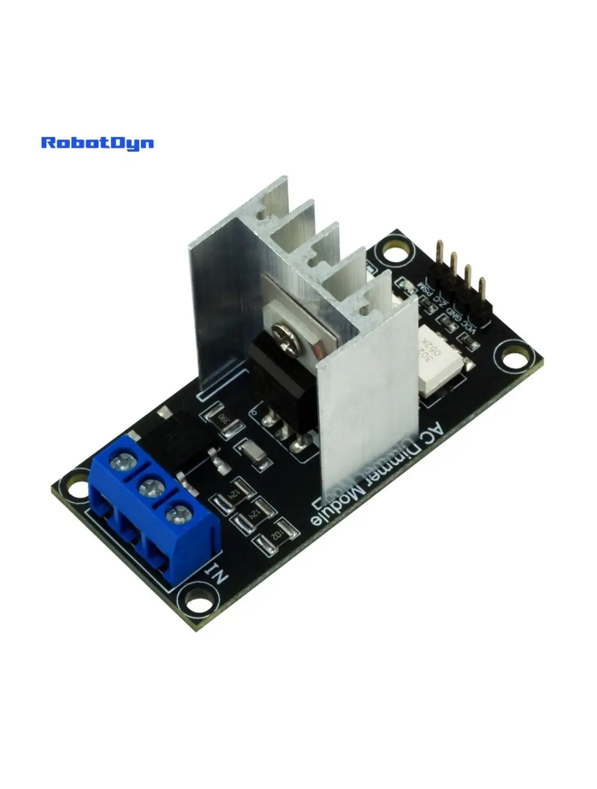

Module Variateur AC, 1 Canal, Logique 3.3V/5V, AC 50/60Hz, 220V/110V

Présentation
Le module variateur AC RobotDyn est un contrôleur à découpe de phase monocanal basé sur un TRIAC, conçu pour réguler la puissance AC fournie à des charges résistives et certaines charges inductives. Il permet à des microcontrôleurs comme Arduino, ESP8266, ESP32 ou STM32 d’ajuster en douceur la luminosité des lampes à incandescence ou LED dimmables, ou de contrôler la vitesse de certains moteurs AC.
La section haute tension est galvaniquement isolée du côté logique via un optocoupleur, empêchant toute possibilité que la tension secteur n’atteigne votre microcontrôleur.
Fonctionnement
Le module utilise la détection de passage à zéro pour synchroniser la commutation avec la forme d’onde AC. Lorsque la tension AC passe par zéro, la broche ZC envoie une interruption au microcontrôleur. Celui-ci attend alors un délai calculé avant de déclencher le TRIAC via la broche PSM — plus le délai est long, moins de puissance atteint la charge.
- À 50 Hz, le passage à zéro se produit 100 fois par seconde
- À 60 Hz, le passage à zéro se produit 120 fois par seconde
Brochage
| Broche | Fonction | Connecter à |
|---|---|---|
| VCC | Alimentation logique | 3.3 V ou 5 V |
| GND | Masse | GND |
| ZC | Sortie détection passage à zéro | Entrée numérique avec support d’interruption |
| PSM | Déclenchement gâchette TRIAC | Toute sortie numérique |
Broche zéro-cross par carte
| Carte | Broche ZC | Broches de sortie disponibles |
|---|---|---|
| Arduino UNO / Nano | D2 | D0–D1, D3–D13 |
| Arduino Mega | D2 | D0–D1, D3–D70 |
| Arduino Leonardo | D7 | D0–D6, D8–D13 |
| ESP8266 | D1, D5, D7 | D2, D6, D8 |
| ESP32 | Toute GPIO avec interruption | Toute GPIO |
Charges compatibles
Fonctionne avec :
- Lampes à incandescence
- Lampes LED dimmables (marquées « dimmable »)
- Lampes halogènes
- Éléments chauffants
- Certains moteurs AC (ventilateurs, perceuses)
Ne fonctionne PAS avec :
- Lampes LED standards (non dimmables)
- Lampes fluorescentes / CFL
- Appareils à régulateurs électroniques intégrés
- Charges inductives sans circuit snubber
Exemple de code Arduino
#include <RBDdimmer.h>
#define DIMMER_PIN 3
#define ZC_PIN 2
dimmerLamp dimmer(DIMMER_PIN);
void setup() {
dimmer.begin(NORMAL_MODE, ON);
}
void loop() {
for (int i = 0; i <= 100; i++) {
dimmer.setPower(i);
delay(50);
}
}Installez la bibliothèque : RBDDimmer sur GitHub
Où acheter en 2026
RobotDyn a cessé sa production, mais des modules compatibles sont largement disponibles auprès de revendeurs tiers. La conception originale est open-source — la plupart des clones sont fonctionnellement identiques.
Produits associés
- Variateur Haute Charge 16/24A — pour les charges industrielles
- Variateurs AC pour bricolage — page de présentation
Documentation
- Diagramme de brochage (PDF) — à venir
- Schéma (PDF) — à venir
- Plan dimensionnel (PDF) — à venir